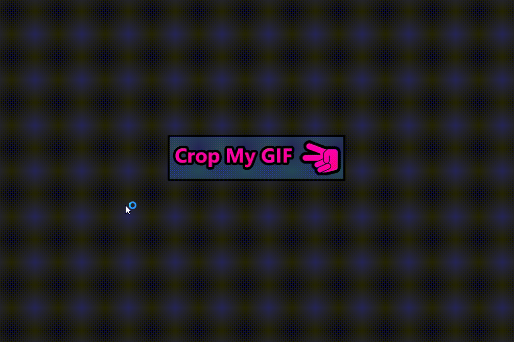

How to use it

1. Choose a GIF file
2. Click the image to select the crop start/end positions
3. Check if the output size is correct
Press “Clear Selection” if you want to select again
4. Check if you want to preserve the input GIF fps
“Preserve FPS” will take longer to export
5. Press “Crop My GIF” to export it
6. Done!